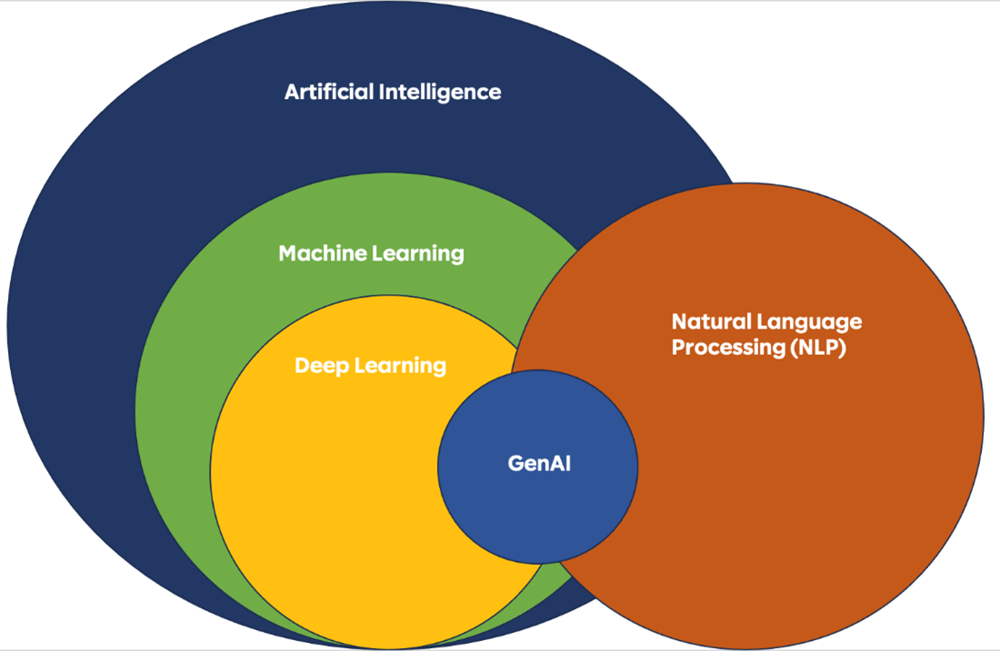
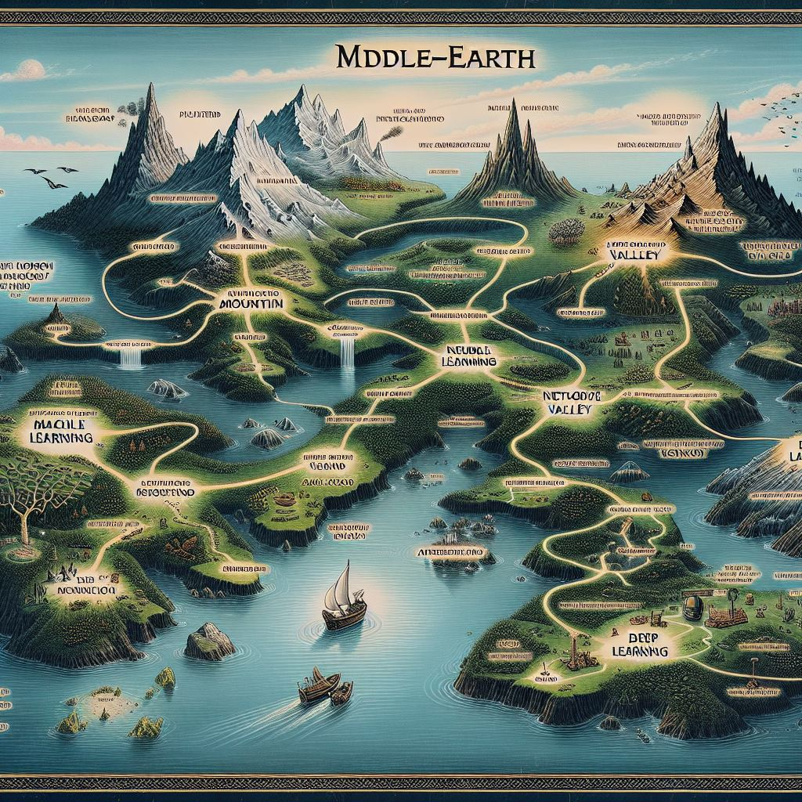
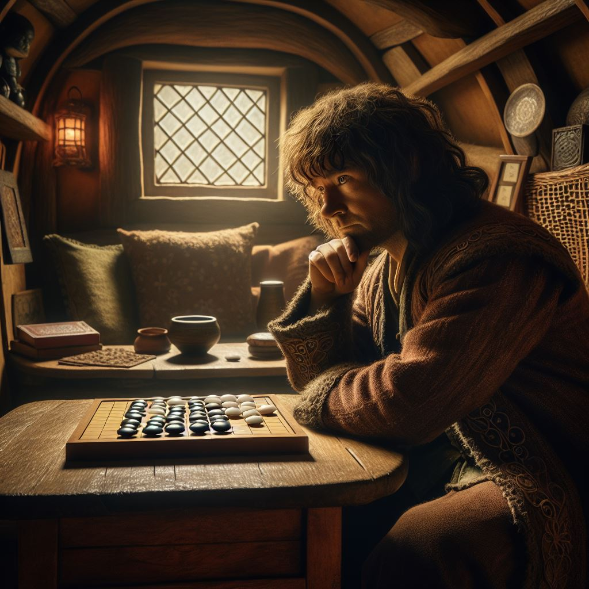
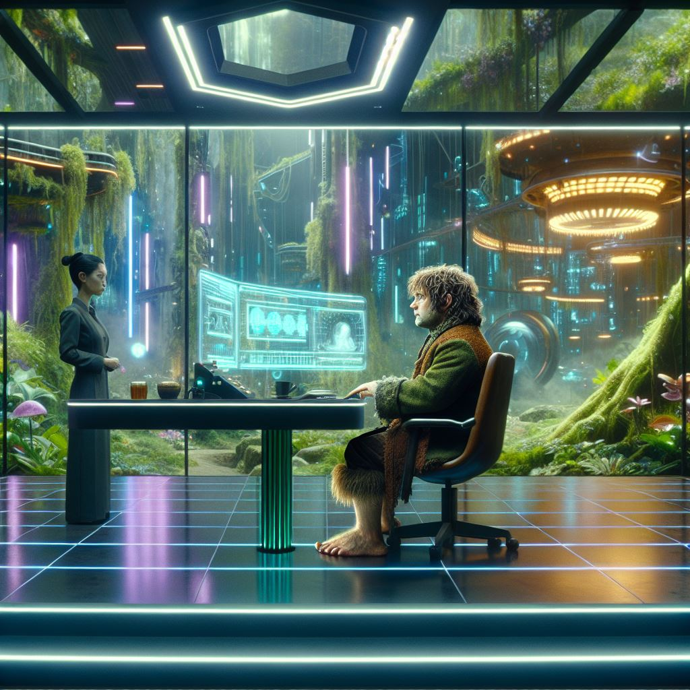

Tolkien & Gen AI
¿Qué es la IA Generativa?
El camino hacia GenAI
un mapa como el de la Tierra Media de Tolkien representando la evolución de la Inteligencia Artificial
Tipos de aprendizaje
hobbit supervisado
hobbit no supervisado
Ejemplos de aprendizaje
hobbit Go
hobbit Go Zero
Limitaciones de la IA tradicional
- Gran cantidad de datos
- Sesgos en los datos
- interpretabilidad
- Especialización
- Requerimientos computacionales
- Mantenimiento y actualización
- Seguridad, privacidad, ...
¿Es la
Inteligencia Artificial
"inteligente"?
¿Es la IA "inteligente"?
una ilustración de un Hobbit participando en el test de Turing, con estilo años cincuenta
una ilustración de un Hobbit participando en el test de Voight-Kampff, con atmósfera futurista
Comportamiento emergente
Comportamiento emergente

una ilustración de un hobbit masculino con una corona de rey
una ilustración de un hobbit femenino con una corona de reina
una ilustración de un hobbit que es médico
una ilustración de un hobbit mujer que sea enfermera